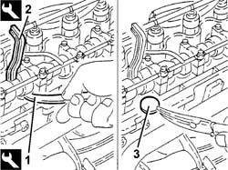

1036H10 valve tappets - check and adjust clearance
- Path
- Procedures > 10 ENGINE > 1036 TIMING SYSTEM > 1036H tappets and rocker shafts > 1036H10 valve tappets - check and adjust clearance
- Kind
- repair procedure (removal / refitting; the operation number is the code)
- Applies to
- engines: 1.9 JTD 8V; all production periods
- Interactive page
- https://sloeber94.github.io/elrnDB-a147/en/#/3025010
Applies to: engines: 1.9 JTD 8V; all production periods
1016A10 sound-proofing cover - r + r
1016A20 single cam cover - r + r and replace gasket
7055B64 Engine compartment DUST shield in front wheel arch (one), left or right - R.R.
1036H14 valve tappets - check clearance
1. Lower the tappet using the appropriate tool.
 | Name | Country |
|---|---|---|
1 | Lever | 1.860.443.000 |
2. Fit a tool to hold the tappet down, then withdraw the pressure lever fitted previously.
| Name | Country |
|---|---|---|
2 | Lever | 1.860.724.001 |
3. Remove the valve clearance adjustment pad and replace it using a suitable shim.
Remove the tool for keeping the tappet lowered.
Repeat the above procedure for the remaining valves.

Applies to: engines: 1.9 JTD 8V; all production periods
1036H14 valve tappets - check clearance
7055B64 Engine compartment DUST shield in front wheel arch (one), left or right - R.R.
Topics linked from this page (5)
- 1016A10 sound-proofing cover - r + r
- 1016A20 single cam cover - r + r and replace gasket
- 1036H14 valve tappets - check clearance
- 4450B04 right front wheel r r
- 7055B64 Engine compartment DUST shield in front wheel arch (one), left or right - R.R.
Topics that link to this page (7)
- D05 ENGINE DOES NOT PRODUCE BEST PERFORMANCE
- D10 ENGINE IDLE IRREGULAR
- 0010K20 20,000km service coupon, emission control version
- 0010K40 40,000km service coupon, emission control versions
- 0010K80 80,000km service coupon - emission control versions
- 0010M20 120,000km service coupon, emission control versions
- 0010M60 160,000km service coupon - emission control versions